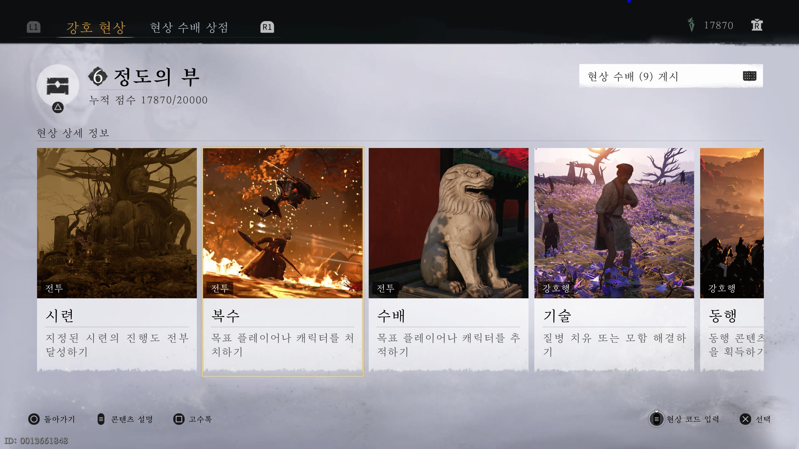
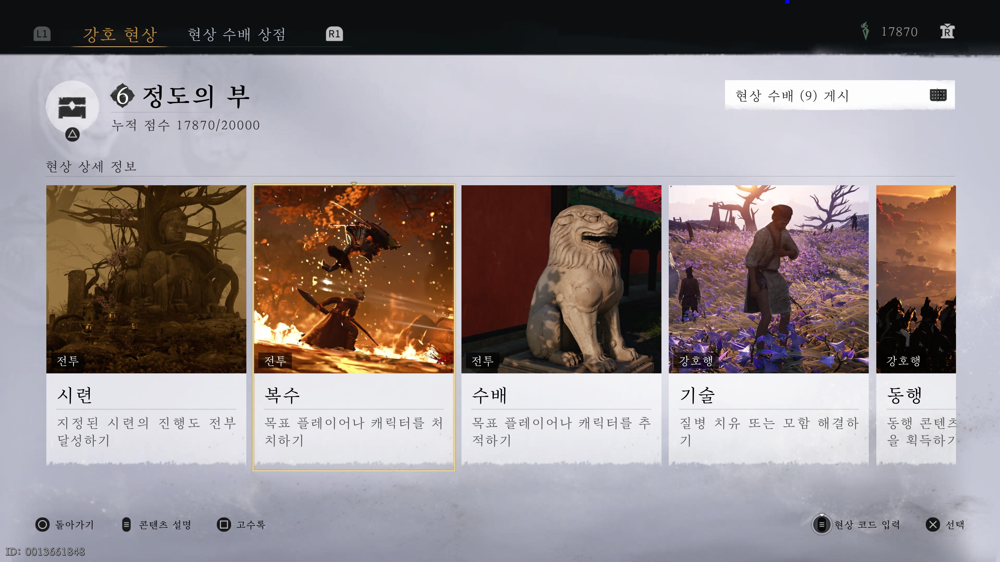
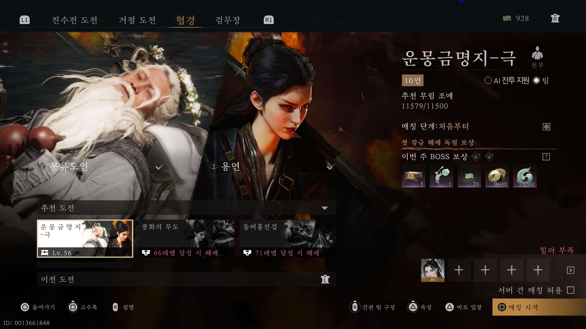
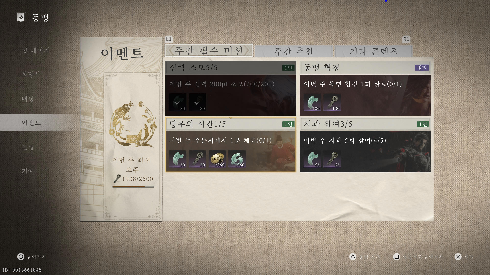

일간
[문파 > 강호 호령]

개당 60점, 주당 1200점을 채워 각 문파별 아이템을 구매할 수 있습니다.
[강호행 > 복수/수배]
복수와 수배에서 매일 NPC를 처치하면 외형 아이템을 얻을 수 있습니다.
숙제는 아니지만 숙제 같은 것
📍 가이드 안내
강호의 고수가 되기 위해 매일, 그리고 매주 챙겨야 할 목록입니다.
꾸준함이 곧 무공의 깊이가 됩니다.
개당 60점, 주당 1200점을 채워 각 문파별 아이템을 구매할 수 있습니다.
복수와 수배에서 매일 NPC를 처치하면 외형 아이템을 얻을 수 있습니다.
음의 선율 2개를 구매할 수 있습니다.

매주 심득, 장비, 기술 상자와 음의 선율 1개를 구매할 수 있습니다.

무역을 통해 단맥전을 획득할 수 있습니다.

각 컨텐츠를 1회 클리어하면 보상을 획득할 수 있습니다.
이벤트를 통해 보주를 매주 2500개 획득할 수 있습니다.
매주 죄엽 2천개를 획득할 수 있습니다.

경매에 참석해 행운 봉투를 획득하고 보상을 받을 수 있습니다.